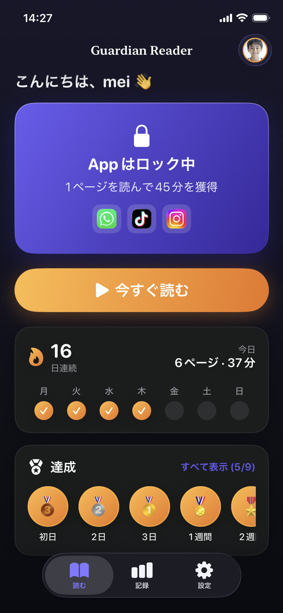
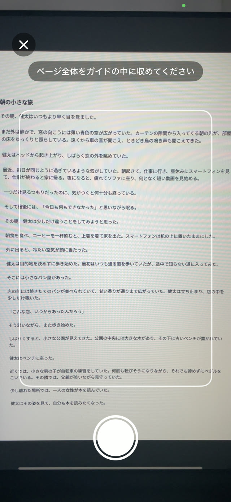
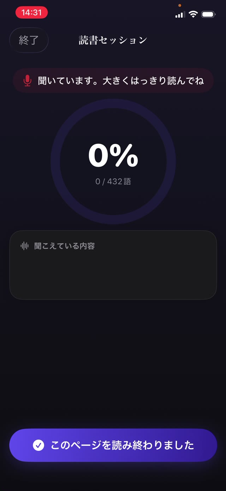
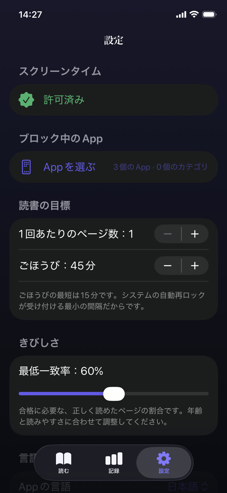
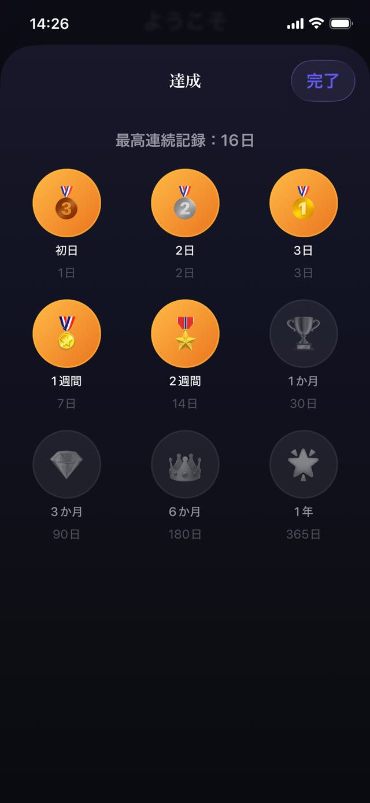
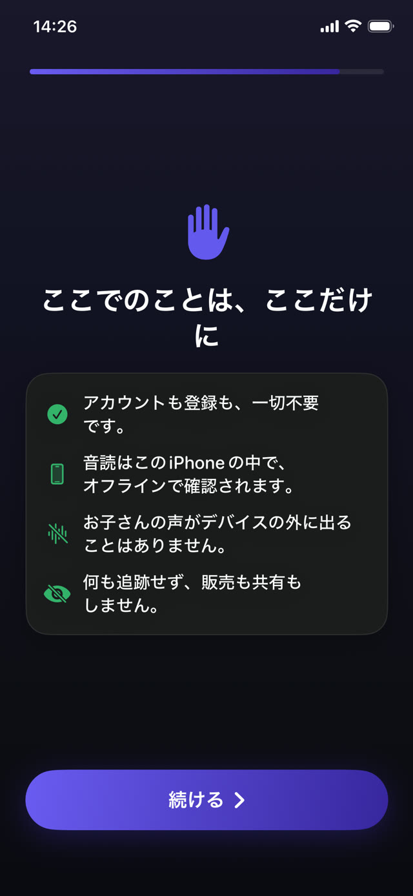

音読を聞いて確かめる見守りアプリ。
Guardian Reader は、保護者が選んだアプリをロックします。お子さまが紙の本を声に出して読み、iPhone が一語ずつ照合し、獲得したスクリーンタイムが解除されます。保護者にもお子さまにも、意志の力は必要ありません。
無料 · お子さまの iPhone 用、iOS 18 以降 · アカウント不要、追跡なし · 9言語対応


読んでから、遊ぶ。
Guardian Reader は、お子さまとアプリのあいだに本物の本を置きます。数ページを声に出して読み、一語ずつ確認されると、画面が開きます。
iPhone · iOS 18 以降 · 無料版：音読の確認とアプリ1つのロック · Premium は7日間無料
アプリの中身
読み終えるまで、アプリはロックされたまま。
ペアレンタルコントロールと音読コーチが一つに。操作はお子さま一人でできて、確認は iPhone が行います。
リアルタイムの確認
一語ずつ確認していく様子。
お子さまが音読するあいだ、アプリは聞き取った内容をスキャンしたページと照合し、一致率がその場で上がっていきます。これは実際のセッションで、紙の本を iPhone に向けて読んでいます。正直に読めば基準をはるかに超え、別のことを話せばほぼゼロになります。
音読こそが練習になる →
ページのスキャン
どんな紙の本も、鍵になる。
お子さまは読むページを1ページずつ撮影し、そのあと本物の本と同じように通して読みます。枠の中の文字だけが対象で、同じセッションですでにスキャンしたページは自動的に弾かれます。
子どもにもっと読んでもらうには →
ごまかしは通らない
子どもが実際に使う近道を見抜く。
当てられるクイズも、自己申告もありません。話した言葉は、スキャンした当のページと順番どおりに照合されます。飛ばし読み、その場しのぎ、読んだという申告では通りません。つっかえや小さな間違いは通ります。見ているのは読んだかどうかで、完璧かどうかではありません。合格ラインの厳しさはスライダーで決められます。
獲得型スクリーンタイムの仕組み →
ごほうび
音読クリア。スマホ解禁。
獲得した分だけアプリが開き、残り時間が表示されます。ゼロになると自動で再びロックされます。Apple のスクリーンタイムが適用するので、Guardian Reader を閉じていても有効です。
YouTube と TikTok を制限する →
保護者が決めるルール
交換レートは保護者が決める。
入るのはページ数、出るのは分数です。4〜6歳なら1ページで約15分、ティーンなら4ページまでで約45分。年齢に応じた目安が最初に提案され、どの数値も保護者用 PIN の内側で変更できます。この PIN は端末のパスコードとは別です。
続くスクリーンタイムのルール →
記録と連続日数
また戻ってきたくなるメダル。
お子さまには連続日数、スター、メダル。保護者には日ごと・月ごと・年ごとのページ数。Premium では各セッションの PDF レポートも作成できます。日付、分数、一致率、そして実際に読んだ本文まで含まれ、先生にそのまま渡せます。
学校に出す読書記録 →
設計からプライベート
子どもに向けたマイクには、説明の義務がある。
カメラがページを読み取り、マイクが音読を文字に起こします。そのどちらも端末の中だけで動きます。アカウントもサーバーも解析も、外部 SDK もありません。声が iPhone の外に出ることはなく、すべてオフラインで動作します。
プライバシーポリシー全文を読む →How it works
4つのステップ。交渉の余地なし。
最初にお子さまと一緒に設定するだけ。あとは約束が自動で回ります。境界線はアプリの中にあって、保護者の声にはありません。
アプリをロック
YouTube、TikTok、ゲームなど、ロックするアプリやカテゴリ全体を選び、設定を保護者用 PIN で守ります。
ページをスキャン
お子さまが読む本物の本のページを、1ページずつ撮影します。
声に出して読む
通して読むあいだ、iPhone が聞き取り、スキャンした本文と一語ずつ照合します。
スクリーンタイムが解除
音読をクリアするとアプリが開き、獲得した分だけ使えます。ゼロになると自動でロックされます。
Guides
つまずきやすいところへの手引き。
スクリーンタイム、アプリのロック、読書習慣についての実践的なガイドと、そのそれぞれで Guardian Reader がどう役立つか。
子どもにもっと読んでもらうには
画面のほうが好きな子に効く7つの方法と、そのうち保護者の意志の力を必要としない一つ。
ガイドを読む スクリーンタイム読書でスクリーンタイムを獲得する仕組み
スクリーンタイムを当たり前のものから獲得するものに変える方法と、見張らなくてもルールが続く理由。
ガイドを読む ペアレンタルコントロールお子さまの iPhone でアプリをロックする
Apple のスクリーンタイムでできること・できないこと、子どもが見つける抜け道、そしてその塞ぎ方。
ガイドを読む YouTube · TikTok子ども向けに YouTube と TikTok を制限する
時間制限だけでは無限フィードに勝てない理由と、アプリの手前に置くべきもの。
ガイドを読む 読みの流暢さ家庭で読みの流暢さを鍛える
先生が言う「流暢さ」の意味、音読が練習になる理由、そして普通の夜に10分を組み込む方法。
ガイドを読む 家庭のルール本当に続くスクリーンタイムのルール
家庭のルールの多くが2週間で崩れる理由と、生き残ったルールに共通する3つの性質。
ガイドを読むFAQ
よくある質問
子どもが本当に本を読んだかどうか、Guardian Reader はどうやって確認しますか？
読んだふりをしてごまかせますか？
AI の音声が子どもの代わりにページを読むことはできますか？
Guardian Reader は保護者のスマホと子どものスマホ、どちらに入れますか？
子どもの iPhone でどのアプリをロックできますか？
Guardian Reader は子どもの声を録音しますか？
どんな本が使えますか？
Guardian Reader は何歳向けですか？
Guardian Reader の料金は？
学校に出す読書記録はもらえますか？
インターネットがなくても使えますか？
子どもがアプリを消したり設定を変えたりできますか？
今夜は、読書が先。
設定は2分。お子さまが声に出して読み、自分でスクリーンタイムを獲得します。保護者が悪者になる必要はもうありません。
ダウンロードApp Store無料 · 広告なし、アカウント不要、追跡なし